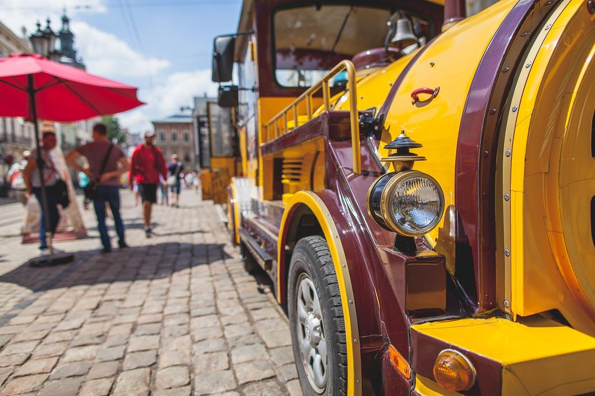

Lwów z WeRwĄ w dniach 2-3 czerwca 2018
30.08.2019
Kiedyś przy grillu wspomniałem znajomym że chętnie bym się wybrał do Lwowa, bo chodź ponad 20 lat mieszkałem w Chełmie to nigdy nie byłem za wschodnią granicą. Znajomi powiedzieli mi że w Chełmie jest Stowarzyszenie WeRwA które organizuje wycieczki na wschód - Lwów, Podole itd. z którym już byli w kilku miejscach. Wyraziłem chęć wyjazdu jakby się zdecydowali ponownie to chętnie dołączę.
Jakie było moje zdziwienie jak kilka dni później po naszej rozmowie dają mi znać że jest wyjazd do Lwowa na dwa dni 2-3 czerwca i czy nadal jestem chętny. Oczywiście bez chwili zastanowienia godzę się i dnia pańskiego 2.06.2018 o godzinie nieludzkiej jak dla mnie a mianowicie 5:00 ruszamy autokarem w liczbie 57 osób do nieznanego mi jeszcze kraju.
Niestety dobry humor mija na granicy którą przekraczamy w Dołhobyczowie, dramat akt I. Cała procedura trwała ponad 2,3h chodź autokar był jedyny o tak wczesnej porze i byliśmy pierwsi do odprawy. Oczywiście nie odbyło się bez łapówki. Tak dobrze przeczytaliście łapówka w wysokości 400 hrywien!!! Ja rozumiem że pogranicznicy ukraińscy zarabiają niewiele ale przynajmniej w takim miejscu nie powinno być takiego procederu.
W związku z tym że tak dużo czasu trwała procedura przejścia granicy nastąpiły zmiany w programie.
Zwiedzanie zaczęliśmy od Cmentarza Łyczakowskiego bardzo ładny cmentarz przypomina mi wyglądem Powązki Warszawiskie, później Cmentarz Orląt Lwowskich obowiązkowe miejsce do zwiedzania. Następnie obiad, ach ten kwas chlebowy, polecam z czystym sumieniem każdemu taki zimny, świeży prosto z beczki. Udajemy się na Wysoki Zamek gdzie rozpościera się widok na cały Lwów. Następnie jedziemy zobaczyć Katedrę Św. Jura. Z zewnątrz robi większe wrażenie niż wewnątrz.
Następnie meldujemy się w hotelu Cisar, miły czysty bardzo blisko opery. Tego dnia kilka osób z naszej wycieczki zapisało się na wieczorne 2h zwiedzanie bocznych uliczek i opowieści o historii Lwowa. Przewodnik przebrany w szaty z przed 400 lat z lampą naftową :)
Bardzo interesująca wycieczka warta 250 hrywien. Niestety pogoda nie dopisała bo lało i to bardzo.
Po zwiedzaniu chcieliśmy usiąść gdzieś w ogródku jakiejś restauracji aby trochę poprzyglądać się ludziom może coś skonsumować, a tutaj zdziwienie godzina 23 i praktycznie każdy lokal się 'zwija', może to za sprawą pogody, tego nie wiem.
Drugi dzień zwiedzamy starówkę, Kaplicę Boimów, Katedra Ormiańska, Katedrę Dominikańską, Leopolis Grand Prix i wiele innych miejsc. W drodze powrotnej zakupy, udało upolować się kwas rozlewany do butelek litrowych, mniam mniam oraz coś dla rodzinki trochę czekoladowych słodkości.
Wracamy do Polski i tutaj nastąpił dramat akt II. 5 godzin i 40 minut na granicy!!!. Zastanawiam się nad jednym, po co budować tak wielkie przejścia graniczne bo z tak wolną pracą na granicy to i w polu można było postawić tyczkę i na to samo by wyszło. Pięć pasów dla ruchu samochodowego i dwa dla ruchu autobusowego, a czynne tylko po jednym!!!
Na ten cud techniki wydano 147mln zł tylko się pytam po co jeżeli nie ma kto tam pracować.
Naprawdę chciałbym jeszcze odwiedzić Lwów a może i dalej się zapuścić w ten kraj, ale jak pomyślę sobie o staniu w sumie 8h na granicy i toalecie w polu to się odechciewa.
Podsumowując dwa dni to stanowczo za mało na to miasto, sądzę że 3-4 dni to minimum. Wszędzie dogadamy się po polsku no może prawie wszędzie a nawet jeżeli nie to ukraiński język jest zrozumiały, nawet bardziej niż rosyjski. Powiem tak gdyby mnie uśpili w Polsce i zabrali do Lwowa i tam bym się obudził to dałbym sobie rękę obciąć że jestem nadal w gdzieś w Polsce, mnóstwo wycieczek z polski, jak i indywidualnych turystów. Wszędzie język polski nawet napisy na budynkach, szyldy itd.
W dużej części restauracji dostaniemy menu polskie, chodź przydałaby się znajomość cyrylicy do sporadycznego czytania :)
Jedzenie smaczne, wszystko bajecznie tanie już wiem dlaczego Anglicy czy Niemcy odwiedzają tak licznie nasz kraj.
Przykładowy rachunek na starówce za:
- 2x piwo
- shake mleczny o smaku truskawkowym
- fondatnt czekoladowy z lodami
- woda z cytryną
- panna cotta
Wszystko za 280 hrywien czyli jakieś 42zł na cztery osoby czyli żyć nie umierać.
Ukraina obecnie przypomina Polskę z lat 90. Widać że jest to biedny kraj, ale kraj jak najbardziej warty odwiedzenia.
Dobra koniec gadania poniżej kilkadziesiąt zdjęć, tak na zachętę. Żeby więcej zobaczyć należy się tam wybrać oczywiście polecam jak najbardziej Stowarzyszenie WeRwA ;)
Kilka zdjęć zostało udostepnionych przez Andrzeja Krasnowskiego któremu dziękuję.
